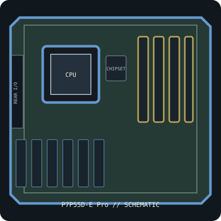

[ INDIVIDUAL COMPONENT // SYSTEM BOARD ]
ASUS P7P55D-E Pro (PCB Rev. 1.02G)
Intel P55 / LGA1156 ATX board, 2009. PCB revision 1.02G, DDR3 and SATA 6 Gb/s/USB 3.0 controllers; CPU support requires exact BIOS qualification. This record identifies one exact SKU/revision; verify the silkscreened board marking before firmware or component selection.

IDENTIFICATION: This entry is for P7P55D-E Pro, PCB revision 1.02G. Similar family names, chipset stepping and board revisions may use incompatible BIOS, layouts or connectors.
Specifications & compatibility
| Exact board / PCB revision | P7P55D-E Pro — PCB revision 1.02G |
|---|---|
| Platform / socket / chipset | 2009 Intel desktop platform; LGA1156; Intel P55 Express |
| CPU compatibility | LGA1156 Intel Core i7/Core i5 generations and other exact processors explicitly listed by ASUS for P7P55D-E Pro, subject to the model-specific CPU table and minimum BIOS. Not compatible with LGA1155 CPUs. |
| Form factor / dimensions | ATX, 305 × 244 mm |
| Memory | Four dual-channel DDR3 DIMM sockets, up to 16 GB non-ECC unbuffered DDR3; memory controller is in the CPU and speed depends on CPU/QVL. |
| Expansion | Two PCIe 2.0 x16 slots (x16 or x8/x8), two PCIe x1 and three PCI slots. |
| Storage | Six Intel P55 SATA 3 Gb/s ports, two Marvell SATA 6 Gb/s ports and one eSATA connection; check the manual for controller sharing and boot-device behavior. |
| External I/O | Rear USB 3.0 and USB 2.0, PS/2, IEEE 1394, Gigabit Ethernet, analog audio and S/PDIF; internal headers add front-panel USB. |
| BIOS / firmware support | ASUS CrashFree BIOS 3 and EZ Flash 2. Use P7P55D-E Pro firmware only. The ASUS processor table gives CPU-specific minimum BIOS; confirm the board BIOS before installation. |
| PSU / case compatibility | ATX case for 305 × 244 mm board. Use a PSU with 24-pin ATX and 8-pin CPU 12 V connections; connect supplemental graphics/slot power only as specified in the manual. |
Installation and service notes
Confirm the exact CPU, minimum BIOS, DIMM type/capacity and supported slot/port mapping in the board-specific vendor support documents before purchase or installation. Socket fit is not proof of processor support; similarly named board firmware must not be cross-flashed.
Use ESD-safe handling, inspect the board for socket damage, leakage and corrosion, and keep loose screws or conductive debris away from the PCB. Check the case standoffs, PSU leads and cooler clearance against the manual before first power-on.
Manufacturer and manual sources
- ASUS P7P55D-E Pro specificationsOfficial manufacturer specification entry for this model.
- ASUS P7P55D-E Pro manual and BIOS supportOfficial manufacturer manual or revision-specific downloads for installation, CPU compatibility and BIOS support.
Specifications are archived for identification, not a guarantee that an aged board or used component is functional. Use the exact-revision vendor materials for final compatibility decisions.